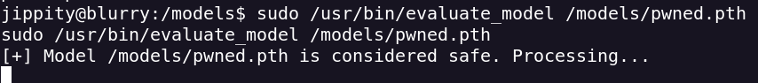

Blurry
- Realizo un escaneo de puertos
- Encuentro abiertos el puerto 80 (http) y el 21 (ssh)
- Al realizar el escaneo el puerto 80 me redirije a un subdominio
- Los añado a hosts
- Rebuscando encuentro una app para crear credenciales nuevas
- Cuando envio cualquier nombre entro como developer
- Necesito configurar clearml usando esto para crear las credenciales
- Tengo que instalar clearml. ClearML es una app para crear modelos de IA.
- Al iniciar clearml metemos la configuración que nos dan
- Tuve un problema por que no añadi estos subdominios
- Buscando vulns encuentro este CVE-2024–24590: Pickle Load on Artifact Get
- Este CVE permite crear un Pickle file que contiene el shell, subirlo al proyecto. Cuando alguien descargue nuestro shell se ejecutará
- Ahora tenemos que saber como el admin ejecutará el artefacto
- Esto nos da info muy relevante
- Esto nos puede ayudar a crear el reverse https://hiddenlayer.com/research/not-so-clear-how-mlops-solutions-can-muddy-the-waters-of-your-supply-chain/?source=post_page-----b44bc2c1aea0--------------------------------
- Ejecuto el exploit y consigo una reverse como usuario
- Para escalar privilegios ejecuto sudo -l para ver que comandos puedo ejecutar como administrador
- Esta script busca archivos que acaban en .pth dentro de la carpeta models quita el codigo malicioso y lo ejecuta.
- Tenemos permiso de escritura en la carpeta models
- Necesito instalar torch para crear el modelo
- Una vez instalado creo el modelo malicioso
- Y lo subo a mi target
- Ejecuto el comando sudo

- Y obtengo el reverse como root